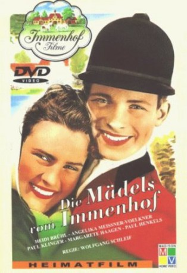

#7342 Die Mädels vom Immenhof
 
 IMDB-Wertung: 6.2 / 10
IMDB-Wertung: 6.2 / 10  Metascore: 0
Metascore: 0 
The story is set in 1954. After their flight from East Prussia following WW II, the orphaned sisters Angela, Barbara (nicknamed Dick) and Brigitte (Dalli) have settled with their grandmother Jantzen near Eutin in Schleswig-Holstein. The Jantzens have been owning the 18th century manor house "Immenhof" for over a 100 years, breeding and selling ponies. Only recently, Jochen von Roth has returned from POW camp and is now trying to establish a stud farm in the old forester's house about 5 kilometers from the manor house. Both Oma Jantzen and von Roth are struggling with finances. Owing to debt, Jantzen may have to face the auctioning off of all her possessions. Into this situation arrives Ethelbert, the sisters' posh cousin from the big city (we never learn which). He is making quite a fool of himself in his red and white riding dress, falling off ponies and into traps, but Dick feels drawn to him nevertheless. Romance is also blossoming between Angela and Jochen von Roth. Helped along ...
Jahr: 1955
Dauer: 84 Minuten
FSK: 6
Land: West-Deutschland Studio: Neue FilmverleihTonspuren:
Untertitel: Deutsch,
Auflösung: 1080p (1440x1080) Größe: 5591 MB
Genre: Drama, Komödie, Familie
Regisseur: Wolfgang Schleif
Drehbuch: Ursula Bruns
Soundtrack:
Darsteller:
 Heidi Brühl als Dalli
Heidi Brühl als Dalli- Paul Henckels als Dr. Pudlich
- Paul Klinger als Jochen von Roth
 Matthias Fuchs als Ethelbert
Matthias Fuchs als Ethelbert- Angelika Meissner als Dick
- Christiane König als Angela
- Margarete Haagen als Oma Jantzen
- Josef Sieber als Hein Daddel
- Tilo von Berlepsch als
- Dirk Dautzenberg als
- Robert Fietz als
- Karl Junge als
- Ruth Lommel als
- Hans Obermeyer als
- Peter Tost als Mans
- Heliane Bei als
- Edgar Fuchs als
- Marianne Hoche als
- Thessy Kuhls als
- Georg Mielke als
- Helga Popp als
- Johanna Schneider als
- Nadja von Radowit als
- Karl-Heinz Kreienbaum als (uncredited
- Stanislav Ledinek als (uncredited
- Kurt Waitzmann als Karl-Heinz Kreienbaum , uncredited
Datei: X:\6-Hexalogie(A-Z)\Immenhof\Mädels vom Immenhof, Die (1955, FSK6, 1440x1080).mkv seit 17.10.2017
Festplatte: HD Collection-3(N-Z)-6(A-Z)
 Es gibt insgesamt 9 Filme in der Gruppe '6-Hexalogie(A-Z)\Immenhof'
Es gibt insgesamt 9 Filme in der Gruppe '6-Hexalogie(A-Z)\Immenhof'